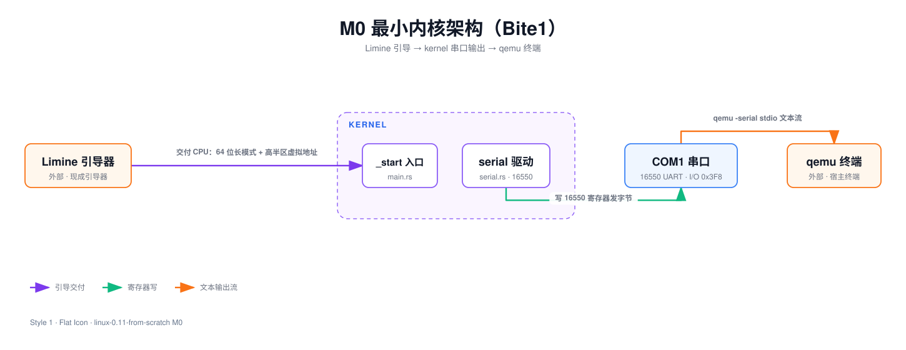
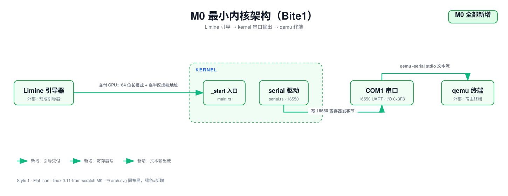

从零手搓一个操作系统内核
"What I cannot create, I do not understand." —— 费曼。本项目把 1991 年的 Linux 0.11 用 Rust 在 x86_64 上从零重写：不学它的历史包袱，学它的设计思想。这一站是 M0：让最小内核活过来。
这个项目在做什么
原项目 Linux-0.11 约 1.3 万行 C/汇编，是操作系统教学的圣地。但直接读它有三个障碍：
16 位实模式的历史包袱、30 年前的工具链、以及"读得懂 ≠ 写得出"。
所以我们的玩法是复刻，不是阅读：每个里程碑都从零写代码、有明确的验收命令， 最终功能与原项目逐项对齐，而架构允许按现代方式重来。
模块关系：M0 的最小系统
M0 的架构只有一条链——引导器把 CPU 交给内核，内核通过串口向世界喊话：

三个模块、三条边：Limine 引导器（外部现成组件）把 CPU 收拾干净（64 位长模式 + 高半区虚拟地址）
交给 _start；内核里的 serial 驱动按 16550 寄存器约定写 I/O 端口发字节；
qemu 把串口字节流转成终端上的文本。
用到哪些技术
| 技术 | 干什么 | 为什么选它 |
|---|---|---|
| Rust（no_std） | 内核实现语言 | 用户明确要求；内存安全，裸机生态成熟 |
| Limine | 引导器（bootloader） | 把 16 位实模式的脏活外包，落地即是 64 位长模式 |
| x86_64 | 目标架构 | 抛弃 i386 历史包袱；现代 PC/虚拟机的事实标准 |
| 16550 UART | 串口输出 | 两条汇编指令就能用的最原始输出设备 |
| qemu | 虚拟机 | -serial stdio 直接把内核输出接到终端 |
| Docker | 构建环境 | 工具链容器化，宿主机零安装 |
为什么用 Limine 外包启动，而不是像原版一样手写 bootsect/setup/head？
备选：① 照原版写三段汇编穿越实模式→保护模式→长模式；② 用 Limine 直接落在 64 位。
选择理由：16 位实模式 Rust 不支持，且它是历史包袱不是设计精华。
放弃的成本：方案①能完整体验"CPU 加电后到底发生了什么"——这段知识我们只看文档，不动手了。
M0：让最小内核活过来
本里程碑目标只有一句话：编译出一个形状正确的 64 位高半区内核 ELF—— 能被 Limine 加载，入口初始化串口、做一次协议握手检查、打印一行存活信息，然后停机。 右边是空的工程，跟着文章往下读，代码会一块一块长出来。
问题
我们手上什么都没有：没有操作系统，没有标准库，没有 main，没有 printf。
连"打印一行字"这种最朴素的需求，都得自己对着硬件寄存器一个字节一个字节地写。这个 Bite 要回答三个问题：
- 代码写成什么样，才能脱离操作系统编译？（答案：
no_std+ 专用 target） - 二进制长成什么样，引导器才肯加载？（答案：固定链接地址的 ELF64 EXEC + 协议握手结构）
- 怎么确认它活了？（答案：最原始的输出设备——串口，直接写 I/O 端口）
背景概念铺垫
引导器（bootloader）与 Limine 协议
CPU 加电后自己不会找内核。从磁盘读内核、解析 ELF、开分页、切 64 位长模式——这一大段脏活外包给
Limine。外包不是免费的：内核要在 ELF 的约定段 .limine_requests 里放"请求"，
Limine 加载时现场批改——比如把协议版本号原地清零表示"这个版本我支持"。
ELF 可执行文件：EXEC 与 DYN 之分是内核的生死问题
EXEC 表示地址固定，DYN（PIE）表示地址可搬——后者指望运行时有个动态加载器，
而加载器是操作系统提供的服务。内核是操作系统的本体，它启动时没有人在它下面，
所以地址必须在编译期钉死：必须是 EXEC。
高半区内核
我们的内核链接在 0xFFFFFFFF80000000——64 位虚拟地址空间最顶上 2GB 的起点。生活类比：
一栋楼，楼上固定是物业办公室（内核），楼下全部出租（用户程序）。租户随便换，物业永远在顶楼，门牌号不变。
第一个文件：crate 定义
整个 crate 零依赖——裸机上也没有依赖可用。panic = "abort" 是因为通常
panic 会逐层"拆栈"清理现场（unwind），那套机制需要运行时支持；裸机没有，panic 只能当场中止。
链接脚本：地址就是法律
链接脚本决定 ELF 里每个字节"住在哪个门牌号"。. = 0xFFFFFFFF80000000; 让所有段从高半区基址开始排，
与 Limine 的映射约定对齐；ENTRY(_start) 让 ELF 头的入口指向我们的 _start 符号。
.limine_requests 段用 KEEP(...) 包住——rustc 默认开 --gc-sections，
会把"没被代码引用"的段回收掉；这个段只给引导器看，不 KEEP 就会被收走。段间按页对齐，
让不同权限的段将来能被分页硬件分开保护——现在还没分页，先把姿势摆对。
内核入口 main.rs
#![no_std] 不链接标准库（std 依赖操作系统），只用最精简的 core；
#![no_main] 告诉编译器别找 main——入口我们自己定。
BASE_REVISION 是发给 Limine 的协议请求：两个魔数 + 版本号 3。它必须用 static
（真占内存、有固定地址，Limine 才能找到并批改它），靠 #[used] 防止编译器当死代码删掉，
靠 #[unsafe(link_section)] 精确投递到约定段——像寄信必须写对信箱编号。
_start 干四件事：初始化串口 → 检查握手（BASE_REVISION[2] 没被清零 = Limine
不支持版本 3，喊话停机）→ 打印 M0: kernel alive → 停机。
握手检查为什么放在 _start 第一件事之后？
如果 Limine 不支持我们要的协议版本，内存布局、入口状态全都不可信，之后做的一切都白搭。
所以先 serial::init()（确认有地方喊话），立刻检查握手结果——先确认地基，再盖房子。
halt() 死循环执行 hlt 指令让 CPU 休眠——现在没有中断能唤醒它，等于永久停机。
#[panic_handler] 是 no_std 的必答题：panic 了怎么办必须自己交代，我们的答案是也走
halt()——内核里 panic 的唯一体面结局。返回类型 -> ! 读作 never：
这些函数永远不返回，它们是执行流的终点。
16550 串口驱动
串口 UART 16550 与端口 IO
串口（COM1）是 PC 上最原始的输出设备。x86 给这类设备留了一套独立于内存的 I/O 端口地址空间，
访问要用专门的 in/out 指令。COM1 端口基址 0x3F8，基址加偏移就是各寄存器。
注意 DLAB 位：偏移 +0/+1 是一址两用的——DLAB=0 收发数据，DLAB=1 变成波特率除数寄存器，
所以初始化要先"换挡"设波特率，再换挡回来。
寄存器偏移与位定义是 16550 datasheet 的行业约定。第一个驱动为什么是串口而不是屏幕？ 屏幕要 framebuffer、字体、绘图，一串依赖；串口只要两条汇编指令。在没有内存管理、没有中断的当下， 串口是唯一够得着的输出通道，也是之后所有里程碑的"呼吸机"。
outb/inb 用 asm! 把 out dx, al / in al, dx
包一层。options(nomem, nostack, preserves_flags) 是对编译器的承诺：不碰内存、不碰栈、不改标志位——
承诺越准确，编译器越敢优化。全部内核代码对硬件的访问就收敛在这两个函数里。
unsafe 块不是"关掉检查"，是程序员签字画押"这段我人工负责"。
init() 是 16550 标准初始化序列，七步：关中断 → 开 DLAB → 写波特率除数（除数 1 = 115200）
→ 关 DLAB、定 8N1 → 开 FIFO 并清空 → 拉握手线。每步就是一次 outb。
发一个字节的流程是轮询：反复读 LINE_STATUS，直到"发送保持寄存器空"那一位亮起来， 再往 DATA 写字节。慢，但零依赖，够用。
架构总览（本里程碑全部新增）

验收
本 Bite 验收 = 编出形状正确的 ELF。构建在 docker 容器里跑，cargo build 零警告通过后：
$ readelf -h kernel/target/x86_64-unknown-none/debug/kernel
Class: ELF64
Type: EXEC (Executable file)
Machine: Advanced Micro Devices X86-64
Entry point address: 0xffffffff80000050
$ nm kernel/target/x86_64-unknown-none/debug/kernel | grep _start
ffffffff80000050 T _start| 检查项 | 期望值 | 为什么 |
|---|---|---|
| Type | EXEC | 固定地址，非 PIE——裸机没有动态加载器 |
| Entry | 0xffffffff80000050 | 落在高半区基址上方，链接脚本生效 |
_start 地址 | 与 Entry 一致 | 符号没被改花名，入口确实是我们的函数 |
常见坑（实踩）
坑 1：.cargo/config.toml 放错位置，被静默忽略
cargo 从当前工作目录（不是 manifest 所在目录）向上找配置。配置放 kernel/.cargo/ 下
就不报任何错，默默按默认 target 编出一个主机用的 linux-gnu 二进制。工具静默降级比报错可怕。
坑 2：x86_64-unknown-none 默认产 PIE
不加 relocation-model=static，产物 Type 是 DYN 不是 EXEC——
这种文件在裸机上没法跑。判据就是 readelf -h 的 Type 一栏。
与原版差异
- D1（boot 架构）：原版从 BIOS + 软盘开始，三段汇编自己穿越实模式→保护模式。 我们走 Limine，落地即是 64 位长模式。永久豁免：抛弃历史包袱。
- D8（实现语言）：C → Rust。
no_std生态、asm!宏、panic handler 机制。 - D9（增量能力）：原版 0.11 没有串口日志通道，这是我们多加的"呼吸机"。
展望：Bite 2
写 limine.conf，用 xorriso 把内核 + Limine 打成 ISO，qemu -serial stdio 启动，
终端上断言 M0: kernel alive 这行字出现。本 Bite 编出的 ELF 到那时才算真正"活了"。
Demo · 内容与代码来自 linux-0.11-from-scratch 项目真实产出 （docs/milestones/m0-boot/tutorial.md · kernel/src/）。交互形态参考 pi-from-scratch。